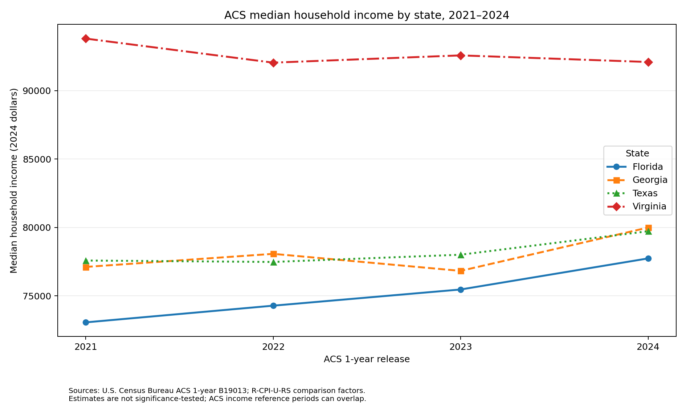

Also known as: line chart, line plot, line diagram. A spaghetti plot is a special case containing many overlapping lines; it is not a synonym for every line graph.
Apply the Census Bureau Statistical Quality Standards, revised September 29, 2026, within their stated scope. The chart-selection advice and implementation checks on this page explain practical design choices; they do not create additional agency mandates. Treat Essential items as the core design conditions for this chart, and confirm formal applicability through the program’s review process.
Coordinate this page with Titles and Subtitles, Legends, Sources, and Visualizing Uncertainty. Keep detailed component guidance in those shared pages rather than duplicating it here.
A line graph connects ordered observations to show change, continuity, or patterns across a meaningful sequence—most often time. It is useful for identifying upward or downward trends, turning points, gaps, and differences between a small number of comparable series. Connecting points implies meaningful order and suggests values between the displayed observations; do not use it for unrelated categories.
Line graphs emphasize the direction and rate of change, but precise magnitudes, units, and uncertainty still matter. A line represents observations or estimates—not proof that a trend is statistically significant.
Use a line graph when observations have a meaningful order, a comparable measure is available at successive periods, and changes across periods are central to the analytical question.
Consider another chart if the main question is a single-period comparison, exact values, part-to-whole composition, or dozens of crowded series. If observations occur only at disconnected or unordered categories, a dot or bar chart may communicate them more faithfully. When changes between periods are not directly comparable, avoid joining estimates into a misleading trend.
Recommended: Use a simple line graph for a few comparable time series; consider small multiples when the series crowd each other.
Not recommended: A dense, color-dependent spaghetti plot for a static public report without readable labels or a usable alternative.
| Analytical goal | Alternative visualization | Why it may be preferable |
|---|---|---|
| Compare many separate time series | Small multiples | Repeated panels reduce overlap; scales must be consistently described |
| Compare values at one period | Dot plot or bar chart | Emphasizes magnitudes without implying a temporal path |
| Show part-to-whole composition over time | Stacked area chart | Shows composition when categories form a valid exclusive partition; not appropriate for overlapping categories |
| Check exact values or assistive-technology access | Accessible data table | Supports precise lookup and interpretation of missing values |
| Show one estimate with uncertainty for each time point | Line with error bars or a documented interval band | Communicates precision, provided the intervals are calculated and labeled appropriately |
Record Census program, table and variable IDs, vintage, geography, universe, units, price year (when relevant), reference period, retrieval date, and data quality flags. Validate that each observation is unique for its geography/period/measure and that periods sort chronologically.
See relevant repository guidance for axes, color, typography, sources, Visualizing Uncertainty, and Small Multiples; verify links before publication.
For a single plainly identified series, omit a redundant legend. For several series, use direct labels or a legend that clearly maps each line to its meaning. Use horizontal reference lines only when they help readers compare values or interpret a meaningful threshold; keep them visually subordinate to the data.
Use these comparisons to connect each design choice with its effect on interpretation.
| Problematic approach | Why it matters | Preferred approach |
|---|---|---|
| Omitted years are squeezed out of the horizontal axis | The apparent rate of change is distorted | Use actual year coordinates and leave a visible break for missing observations |
| Income estimates from different release years are joined without a common price basis | Inflation and income change are mixed | Convert estimates and MOEs to a documented common dollar year before comparison |
| Series can be identified only by color or hover | Some readers cannot follow the lines | Combine direct labels, distinguishable line styles or markers, and a matching table |
Test the chart at its intended display size and with enlarged text. Follow the reading sequence from title to explanation, figure, table, and source. Check that labels and meaningful marks remain distinguishable without color and that any controls can be operated by keyboard with visible focus. Read the explanation and table with a screen reader to confirm that they convey the same measures, units, missing-data conditions, and important relationships as the chart.
Use automated and manual accessibility testing together. A downloadable CSV supplies values but does not replace the chart’s explanatory narrative; see USWDS visualization guidance. Record the page/version, tool or assistive technology, result, and corrective action. Apply the sponsor’s agreed accessibility baseline rather than treating a palette simulation as a conformance test.
The following examples are retained from the Census guidance. Their datasets, periods, universes and design lessons remain distinct. Some illustrate limitations or less-preferred choices; inclusion does not certify every design or its accessibility.
Example 1. Line chart of the poverty rate and the number of people in poverty: 1959 to 2022.
This chart is a good example of the following: * Color is being used with purpose and the meaning behind the color is shown through clear labeling of the chart. * Only one line is shown on each chart and the units of analysis are clearly identified on both. * A gap is displayed where appropriate and is explained in the notes of the graph.
Example 2: Line chart of Number of Children in Poverty by Supplemental Poverty Measure Components

This graph is a good example of the following: * Four lines are
displayed with clear labels for each line along with labels for each
data point on the line.
* Definitions for the lines are provided in the notes section so there
is no question as to what each line represent. * Color is being used to
distinguish the lines from each other.
Example 3: National Median Monthly Rent Paid by Renter Households: 2017, 2019, 2021. From SEHSD Working Paper Number FY 2024-15.

This graph is a good example of the following: * A legend is used to define each line. * Labels are used for each data point. * Error bars are used for each data point and the notation is clearly defined in the notes of the chart.
Example 4: Percentage of men using different types of leave in the 12 weeks after the birth of their first child, by year of birth

This chart is a good example of the following: * A legend clearly defines the lines being presented on the chart. * Gridlines are used to help the reader interpret the values being displayed on the chart since the values within the lines are not labeled.
2021–2024 ACS state median household income. B19013: use a documented common 2024-dollar basis, retain MOEs and preserve missing periods.
What this adds: Adds reproducible inflation handling, chronological spacing and source-to-chart checks.
Run evidence: The supplied November 10, 2026 run generated this example. Saved-data arithmetic and chart layout were reviewed for this package; published-page accessibility testing remains outstanding.

Source and interpretation: U.S. Census Bureau, 2021–2024 ACS 1-Year Estimates, Detailed Table B19013. Estimates and 90% MOEs are converted to 2024 dollars using the chained ACS R-CPI-U-RS comparison factors recorded in the supplied manifest. The supplied run completed November 10, 2026 (UTC).
The table retains each release-year estimate, MOE and conversion factor. The endpoint summary below is rounded for reading; the CSV preserves precision. The vertical axis is truncated, so judge changes against its labeled dollar scale. No significance test was performed; ACS income reference periods may overlap.
Selected values (rounded for display; CSV retains exported precision):
| State | Year | Income (2024 $) | 90% MOE (2024 $) |
|---|---|---|---|
| Florida | 2021 | 73,061.56 | 492.39 |
| Florida | 2024 | 77,735 | 564 |
| Georgia | 2021 | 77,113.07 | 824.90 |
| Georgia | 2024 | 79,991 | 633 |
| Texas | 2021 | 77,581.13 | 594.34 |
| Texas | 2024 | 79,721 | 564 |
| Virginia | 2021 | 93,801.07 | 846.91 |
| Virginia | 2024 | 92,090 | 831 |
Read the data tables · Download linegraph_acs_income_2024_dollars.csv
Implementation: Python source. The original illustrations above and the ACS output have separate asset paths and source statements.
Use the original illustrations to discuss design choices and their source-specific limitations. Use the ACS addition to demonstrate a documented data-to-chart workflow. Do not combine values across examples, imply that they use one dataset, or relabel a historical image as a new ACS output.
The following contract defines the intended behavior of the linked examples. Confirm the files, commands, dependencies, and generated results against the repository before publication.
Inputs: ACS 1-Year B19013 state estimates and published MOEs for 2021–2024, with release year, geography, source price year, and documented inflation-conversion factors.
Validate one record per state/year. Convert B19013_001E and valid B19013_001M to 2024 dollars with the same positive factor for each release year. Record the factor source, price-year direction, and formula. Do not label the series as 2024 dollars until the conversion is verified. Preserve missing observations and annotation codes.
Use the supplied
Python implementation and the ACS example
runner. The runner maps this page to job line_graph.
Its dependencies are listed in requirements.txt.
Confirm supported input options in the implementation and its
accompanying README.
The executed notebook contains saved outputs from the supplied ACS run. The run status CSV records generated results. The notebook produces the ACS additions; it does not recreate the historical Census illustrations.
The analytical definitions and output checks on this page also specify the requirements for an R counterpart. A verified R implementation is not bundled in this combined package. Retain R execution and Python/R agreement as outstanding validation tasks; do not describe them as completed.
A personal Census API key is required for data queries under the current
Census API guidance. Read CENSUS_API_KEY from the
analyst’s environment. Do not include keys in source control, saved
notebooks, request logs, error messages, or execution manifests; redact
the key query parameter wherever a request URL is recorded.
No shared developer credential or private file path should be
required.
For each run, save the validated data, chart PNG/SVG, a semantic HTML table, descriptive-text draft, and a nonsecret manifest in the selected output folder. Include source table/variables, full reference period, geography, units, transformations, exclusions, dependency versions, and retrieval time. Pin or record versions actually tested. For identical inputs, R and Python should reproduce the same analytical values within an explicitly documented tolerance; visual styling need not be pixel-identical.
When changing years or geographies, recheck product coverage, definitions, annotations, and comparability. A successful run does not establish statistical significance or accessibility conformance.
| Check | Expected evidence |
|---|---|
| Price conversion | For each year, adjusted estimate = source estimate × factor and adjusted MOE = source MOE × the same factor; rounding occurs only for display |
| Time and gaps | Year coordinates preserve elapsed time, and missing estimates break the plotted path |
| Agreement | Both languages use the same source release, factor precision, units, and stated numerical tolerance; no significance claim is inferred from appearance |
Source-statement pattern for this example: U.S. Census Bureau, American Community Survey, 2021–2024 ACS 1-Year Estimates, Detailed Table B19013, selected states. Estimates and MOEs converted to 2024 dollars using the documented R-CPI-U-RS factors. Add the specific source or reproducible request link and actual retrieval date; omit the API key. Identify derived calculations separately from published estimates.
| Issue | Why it matters | Recommended correction |
|---|---|---|
| Connect unrelated categories | Creates a fictional trajectory | Use dots/bars or a genuinely ordered variable |
| Bridge missing periods without disclosure | Suggests unobserved continuity | Preserve a visible gap and note its cause |
| Ignore unequal time intervals | Distorts the apparent rate of change | Use actual chronological x coordinates |
| Compare ACS income releases in different price-year dollars | Creates a misleading trend | Convert to common-dollar units using documented factors |
| Suppress MOE or overclaim significance | Overstates differences | Document uncertainty and apply approved comparison methods |
| Differentiate lines only with color or hover | Excludes some readers | Use direct labels, patterns, keyboard support and a table |
| Clutter the plot with too many lines | Obscures comparison | Highlight/facet/filter without losing accessible alternatives |
| Treat source special codes as numeric values | Introduces fabricated points | Validate codes and display missing appropriately |
The original Census page and its example assets are preserved in this package; see the review record for the exact baseline and changes.
Use the September 29, 2026 consolidated Census Statistical Quality Standards, especially E1-6 (replication documentation), E2-2.3 (visualization requirements), and E3-2.4 (visualization review). Retain review findings and corrections separately from the design checklist.